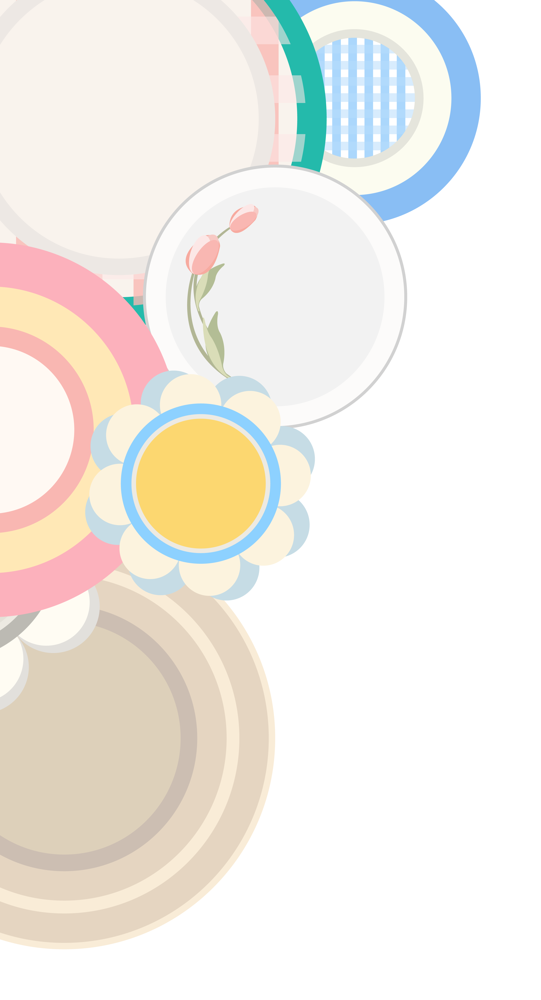

100 Dessert Specialities In New York
This website is about the collection of 100 dessert specialities in New York, it was composed
by three parts: Speciality In Motion, Speciality In Detail, and Speciality in Words. The first part of Speciality
in motion was inspired by the rotating sushi. The second part of Speciality in details was connected with airtable, and
the blue rectangle represents the serving table. The third part of Speciality in words was consired of the style of food menu,
so everything was listing in text.
Collected by Karin Song
Designed by Cytheria Shen